新智元报道
新智元报道
【新智元导读】Claude立大功！开发者靠它剖析MIL语言与E5二进制，绕过CoreML直达硬件，证明NPU训练从来不是硬件不行，而是苹果不让用。
AI界再迎地震，LLM训练未来或从此改变！
OpenClaw引起全球AI龙虾热潮，意外让苹果Mac mini卖爆——
美国百强连锁店之一的microCenter，本来主打的个人消费级PC，最近甚至宣称「Mac mini和OpenClaw天生一对」！
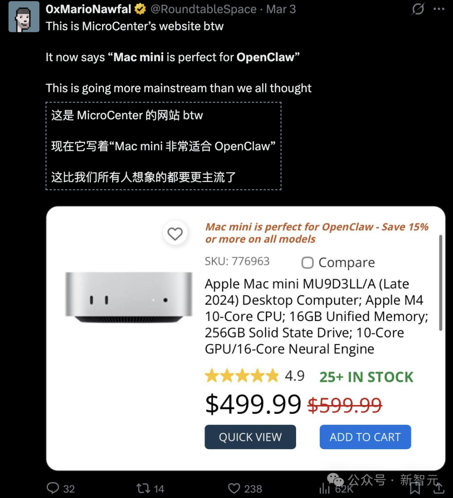
还有好消息：MAC mini养完小龙虾，不用吃灰了——
刚刚，苹果神经引擎（Apple Neural Engine，ANE）被破解，可能引爆AI训练革命！
工程师Manjeet Singh用Claude逆向工程Apple Neural Engine了，还训练了一个单层Transformer。
想象一下：不用GPU，不用TPU，就在M4芯片上完成的。
这并不意味着现在任何人都能构建LLM。还没到那一步。但现在你已经可以在自己的MacBook上用一个小数据集做家庭实验了。
无需CoreML，无需Metal，无需GPU。纯粹利用高速运行的ANE芯片。
如果属实，这无疑意义重大——
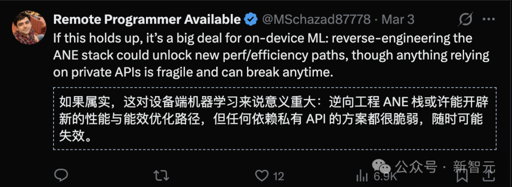
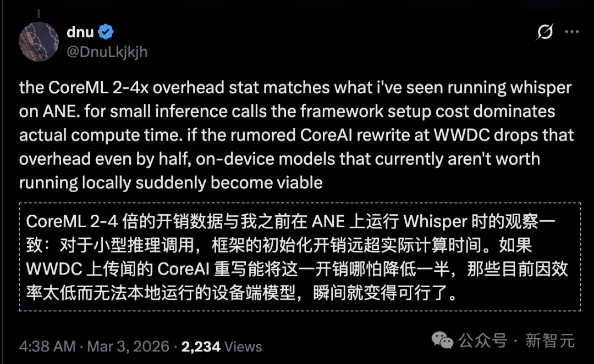
而且Claude深度参与了破解全程，包括整个逆向工程、基准测试以及训练代码的开发——由人类的直觉引领探索方向，由AI进行数据推理并撰写分析报告。
Manjeet Singh直言一切都靠Claude，他只是引导方向：
我们认为，这种人机协作是进行系统研究的一种新颖且自然的方式：
一个伙伴扮演富有直觉的架构师，另一个则充当编写代码和设计实验的工程师。
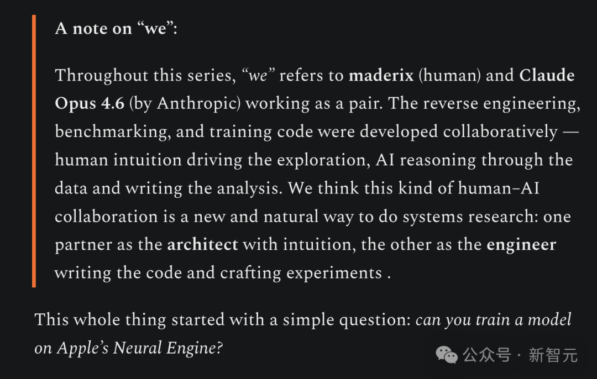
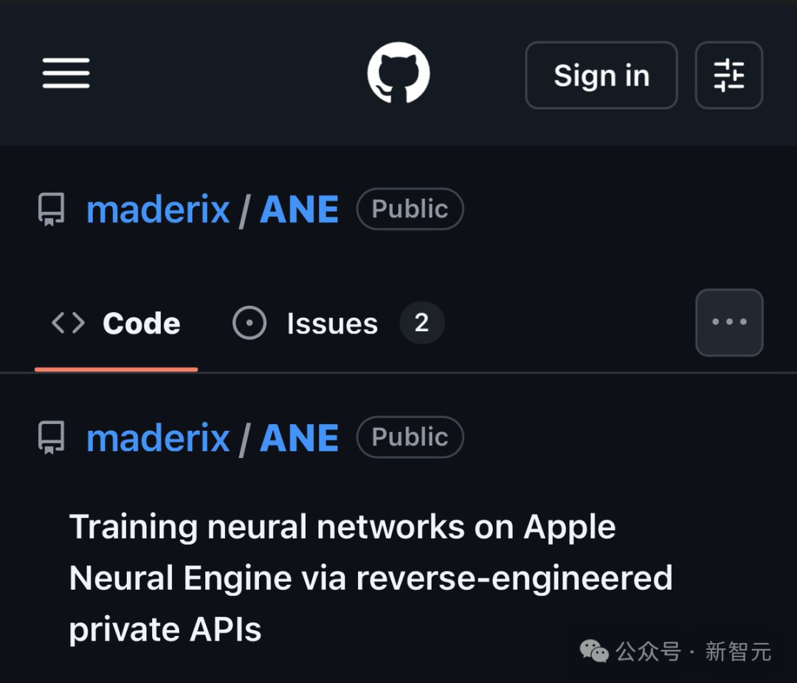
链接：http://github.com/maderix/ANE

Claude在这里扮演了关键角色。
通过Claude的智能分析，开发者钩住了私有方法、剖析了MIL语言的秘密，并拆解了E5二进制的迷雾，最终绕过CoreML框架，直接操控ANE硬件实现前向和反向传播。
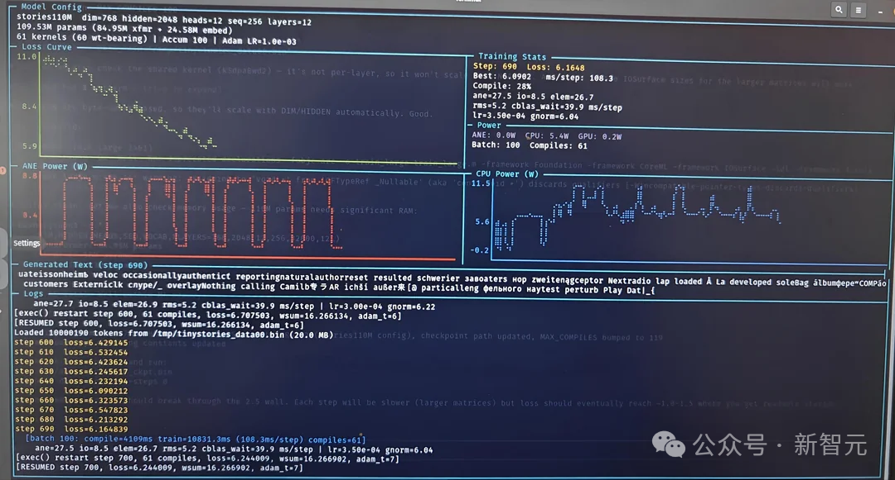
一个单层Transformer（dim=768, seq=512）仅需9.3毫秒一步，峰值效率高达6.6 TFLOPS/W——
这是A100的80倍，H100的50倍以上。
这一发现让无数人的算力账单显得像个笑话。
更惊人的是，最新更新已实现完整Stories110M模型（109百万参数，12层Llama-2架构）在TinyStories数据集上的训练，损失实时下降，功耗低到「小于一瓦特」。
你的桌面Mac，从此不再是消费工具，而是AI训练的超级电脑，成本暴降至电费的零头。
这将改变世界。
首次，任何拥有Mac的人都可以在本地、私密地以远低于云GPU的成本微调、训练或迭代大规模模型。
不再租用4万美元的A100集群。不再排队等待。不再留下巨大的碳足迹。
过去动辄数万甚至数十万美元的训练成本？如今暴跌至几乎只需几美分——基本就是你那台闲置Mac本就在消耗的电费。
AI革命刚刚从耗资数十亿美元的数据中心转移到了你的桌面。
我们才刚刚起步，但大门已经敞开——今天是单层，明天就是完整模型。
超低成本的设备端训练时代已经到来。
未来不是即将来临，它已经在你的Mac上运行。不过，我们西岸看一下什么是ANE？

大多数新款iPhone和iPad都配备了神经引擎，这是一种能极大加速机器学习模型的特殊处理器，但关于这款处理器实际工作原理的公开信息并不多。
苹果神经引擎（简称 ANE）是一种NPU，即神经网络处理单元。
NPU类似于GPU，但GPU加速图形处理，而NPU则加速卷积、矩阵乘法等神经网络运算，是一种定制化的固定功能加速器。
它接收的是已经编译好的神经网络计算图，然后将整张图作为一个原子操作一次性执行完毕。
你无法像操作CPU或GPU那样逐条发出乘加指令（multiply-accumulate）。你提交的是一份描述完整计算图的编译程序，而硬件会从头到尾一次性跑完。
ANE并非唯一的NPU——
除了神经引擎，最著名的NPU当属谷歌的TPU（张量处理单元）。
2017年，Apple在A11 芯片中首次引入Neural Engine，当时是双核心设计。
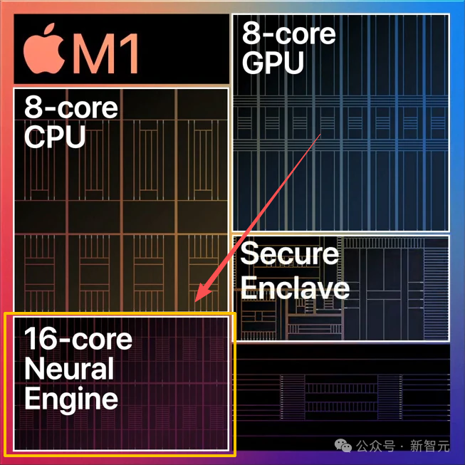
此后每一代都在扩展规模。
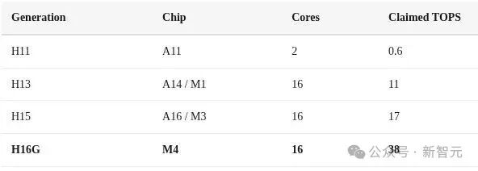
此次研究的对象，是苹果M4芯片的ANE（代号H16G）：
16核心，支持127条评估请求的队列深度；
具备独立的DVFS（动态电压/频率调节）；
并且拥有严格的电源门控机制，空闲时功耗精确降至0毫瓦。

ANE本身性能极其强大，但苹果通过CoreM将它限制在「仅推理」用途。
真正的障碍，从来不是硬件能力，而是软件支持。
以下是完整的ANE软件堆栈的样子，从公共的CoreML API到硬件：
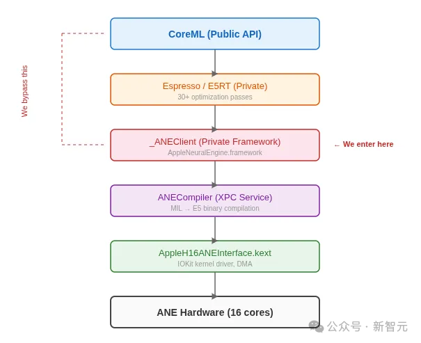
关键洞察：CoreML不是唯一的入口。AppleNeuralEngine.framework中的_ANEClient类提供了对编译→加载→评估流程的直接访问。CoreML只是顶部的一个便利层。
而Manjeet Singh想证明在Apple Neural Engine（ANE）上进行训练——以及在其他NPU上进行训练——是可行的。
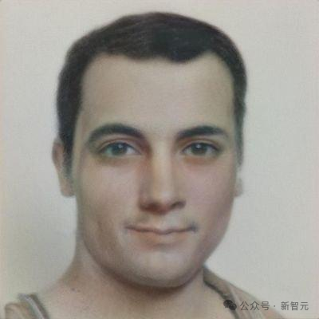
起因是他买了一台Mac mini M4，想利用它的算力来完成他的编译器项目。
这个项目通过逆向私有API，绕过了这一限制，展示了当你真正释放硬件能力时，它能做到什么。
这款NPU宣称拥有38 TFLOPS的INT8算力（但它实际是FP16处理器，所以实际算力减半）。
最终，他搭建了一个定制化的训练流水线，成功训练了一个1.1亿参数的微型GPT模型。
实际上，目前无法用单芯片训练更大的模型，但理论上，通过集群或许可以训练更大规模的模型。不过即使单台设备，也应该能对30亿或70亿参数的模型进行LoRA微调。
再次强调，为什么要在NPU上训练？
因为能效极高。
ANE在峰值算力下功耗仅2.8W，19 TFLOPS能效比高达6.6 TFLOPS/瓦，堪称疯狂！
对比之下，Metal GPU只有为1 TFLOPS/瓦，H100为1.4 TFLOPS/瓦）
需要明确的是：
训练是可行的，但利用率很低（约峰值的 2-3%），并且还存在重大的工程挑战。
许多逐元素运算仍然会回退到 CPU 执行。
目前，这除了用于小型研究模型外，还不能替代GPU训练。

最后的发现令人惊讶：
虽然「38 TOPS」这个数字在技术层面没有错误，但却极具误导性。
苹果从未公开过关于如何榨取ANE最大吞吐量的优化模式。
这里多解释一下——
TOPS是Tera Operations Per Second的缩写，1TOPS代表处理器每秒钟可进行一万亿次（10^12）操作。
它主要衡量理论最大吞吐量，而非实际吞吐量。由于大多数运算都是乘加运算（MAC），因此TOPS的计算公式为：（乘积累加运算MAC单元数量）x（MAC操作频率）x 2。
这是决定AI运行速度的最重要的参数。
矩阵乘法扩展：基础测试
他们从最简单的基准测试开始：对递增尺寸的方阵执行乘法运算。
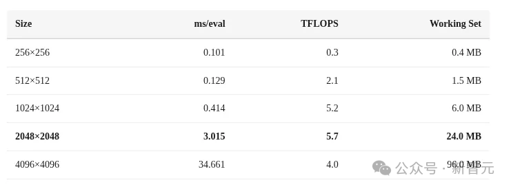
测试结果揭示两大关键现象：
256×256矩阵受限于调度开销：在0.101毫秒的运行时间中，大部分（约0.095毫秒）消耗于XPC和IOKit框架的通信，真正的计算仅占约0.006毫秒。
性能在4096尺寸时显著下降：从2048尺寸时的5.7 TFLOPS降至4096尺寸时的4.0 TFLOPS，这表明存在资源溢出问题。
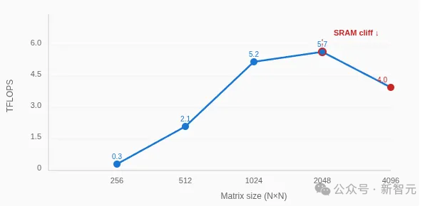
SRAM性能悬崖
2048到4096尺寸的性能骤降正是SRAM性能悬崖的体现。
一次矩阵乘法的计算集包含三个矩阵（A、B、C）。
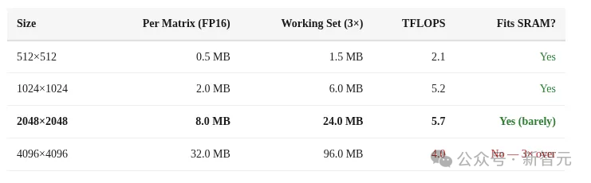
以FP16精度计算：
当尺寸为2048×2048时，24 MB的计算集完全适配芯片上的SRAM，因此能达到峰值单次运算吞吐量（5.7 TFLOPS）。
当尺寸增至4096×4096时，96 MB的计算集远超SRAM容量（约3倍），迫使数据频繁交换至DRAM，导致吞吐量锐减30%。
这一性能在24MB（快速）和96MB（慢速）之间的剧烈变化，表明ANE的片上SRAM容量约为32 MB。
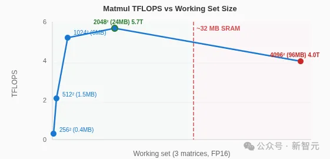
性能并非在达到界限时突然崩溃，而是逐渐下降，这暗示其采用了一种类似缓存的分层架构，而非固定的便签式存储器。
卷积运算优于矩阵乘法
苹果文档中并未明确的一点是：ANE本质上是一个为卷积设计的引擎。将相同的计算任务表达为1×1卷积，而非矩阵乘法，能获得显著提升的吞吐量。
一个矩阵乘法运算 C[M,N] = A[M,K] @ B[K,N] 可以通过重塑数据，完美转化为一个1×1卷积：
输入重塑为：(1, K, 1, M)
权重重塑为：(N, K, 1, 1)
输出重塑为：(1, N, 1, M)
运算量和最终结果完全相同，但ANE的卷积数据通路能以高得多的效率处理这种形式。
深度图网络能填满流水线
单个矩阵乘法操作仅能利用ANE约30%的峰值能力。
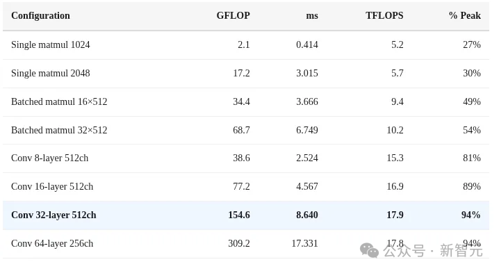
该硬件专为处理图网络而设计——即能够持续让全部16个核心保持忙碌状态的运算链条。
链接的运算越多，就越接近理论上的峰值性能。
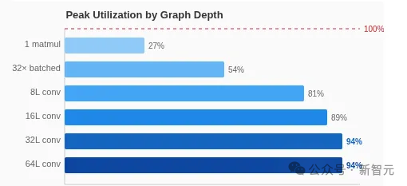
最大化ANE吞吐量的黄金法则：
构建深度图，而非广度图：在一个MIL程序中链接16至64个运算。孤立的单次运算会浪费70%的硬件能力。
优先使用卷积而非矩阵乘法：1×1卷积能利用快速数据通路，而矩阵乘法的速度要慢3倍。
严格控制数据在32MB以内：确保每个张量的内存占用不超过SRAM容量。数据溢出到DRAM会严重损害吞吐量。
避免受限于调度的微小运算：任何执行时间低于约1毫秒的操作，其主要耗时都来自于约0.095毫秒的调度开销。
CoreML vs _ANEClient：难以忽视的开销税
CoreML究竟损失了多少性能？
可以通过两条路径测量相同的运算，来计算性能损失：
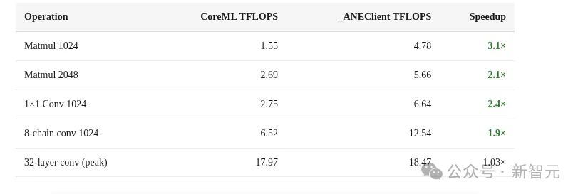
对于小型运算，CoreML增加了2-4倍的开销。
在高吞吐量配置下，由于ANE计算时间占主导，这一差距会缩小。但对于延迟敏感型的工作负载（如大语言模型的token解码、实时推理），CoreML带来的性能损失相当严重。
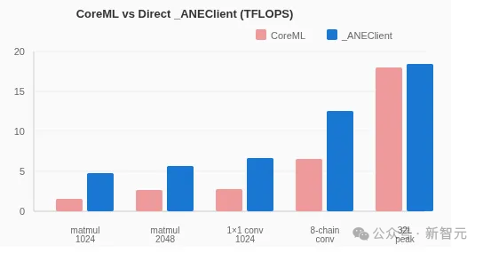
INT8 = FP16：「38 TOPS」的现实含义
苹果宣称M4神经引擎拥有「38 TOPS」的算力。以下是这一数字的真实含义。
在FP16和INT8两种精度下，测量了完全相同的运算：
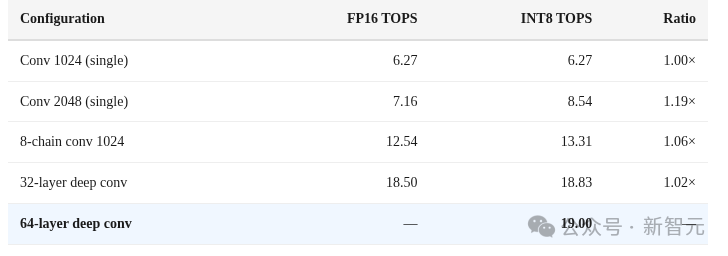
最后发现：
INT8并未带来预期的2倍速度提升。
INT8和FP16的吞吐量几乎相同。ANE在执行计算前，会将INT8权重反量化为FP16格式。
INT8仅节省了内存带宽（从DRAM内存加载更小的权重），并未节省计算周期。
苹果的「38 TOPS INT8」是这样计算出来的：19 TFLOPS FP16 × 2。
这符合行业惯例，即将INT8操作数视为FP16的两倍。但硬件实际上并不能以两倍的速度执行INT8运算。
真正的峰值性能是19 TFLOPS FP16，无论你使用何种量化精度，所获得的最高性能就是如此。
这恰好是根据硬件配置（16核心×约 1.2 TFLOPS/核心）计算出的理论峰值的100%。
在32层以上的深度网络中达到94%的利用率，意味着几乎测量了硬件的原始极限能力。
能效：ANE隐藏的王者
如果只看吞吐量，GPU稳赢。
但ANE真正的优势在于其惊人的效率。
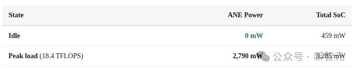
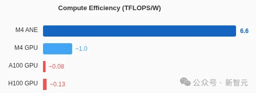
零功耗待机。ANE 采用了硬性电源门控技术——它不仅关闭时钟，而是在闲置时完全切断电源。这消除了任何泄漏电流和待机电量消耗。
在峰值负载下，它能实现 6.6 TFLOPS/瓦的能效，遥遥领先GPU：
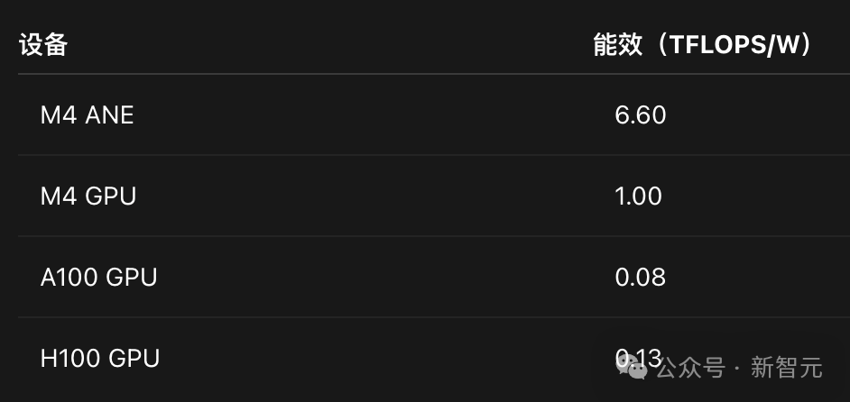
这意味着，ANE在执行每个浮点运算时的能效，能效大约是A100的80倍。当然，A100拥有50倍于ANE的总吞吐量。但对于依赖电池供电的设备端推理而言，ANE性能非凡。
ANE与SME：何时选择使用哪种
M4的CPU核心还配备了苹果的SME（可扩展矩阵扩展）功能。
以下是两者的对比：
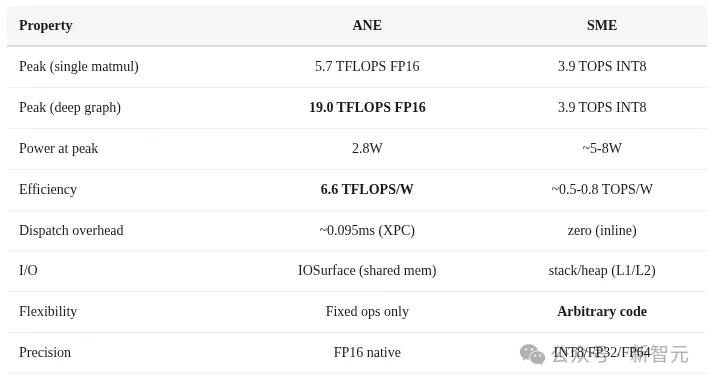
适合使用ANE的场景：大批量推理、包含16层以上的深度图网络、对能耗有严格限制的场景、需要持续高吞吐量的任务。
适合使用SME的场景：单token解码（零调度开销）、ANE不支持的自定义运算、小矩阵运算、任何需要FP32+精度的计算。
在M4上进行理想的大语言模型推理策略是混合模式：预填充阶段（大批量、高吞吐量）使用ANE，解码阶段（单token、对延迟敏感）使用SME。
这次挖掘了ANE的真实能力：在2.8W功耗下，配合正确的网络结构，可实现19 TFLOPS FP16的性能。
而接下来，Manjeet Singh还将详细演示苹果明确不支持的功能：在神经引擎上训练神经网络。